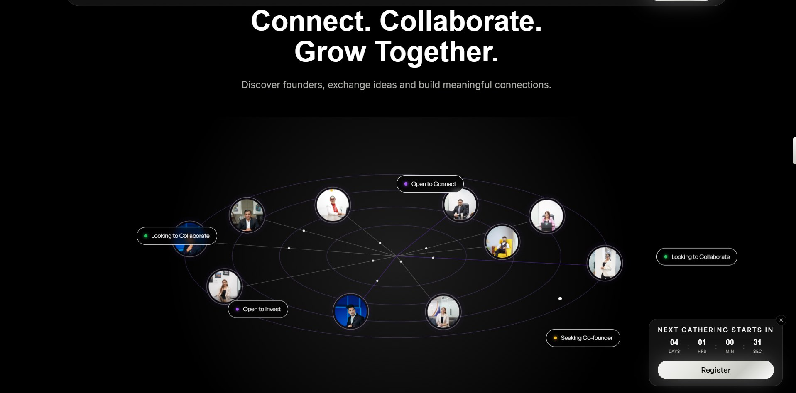

Join with Founder.in is a single-page React app built to recruit and welcome founders into a private community, anchored by an animated hero and a guided join-application flow.
Motion-heavy sections — a particle-field hero, an interactive founder "orb", animated founder stories — sit alongside a Sunday Room / meetup schedule, a podcast section and an admin dashboard for reviewing who's applied.
A Framer Motion-driven hero built around a particle field and an interactive founder orb.
A multi-field application flow for prospective members, backed by its own data layer.
Review and manage founder applications from a single screen.
Sunday Room meetups, founder stories and a podcast section round out the community.
A closer look at the interface.

A short screen recording of the site in action.
I built the component structure and motion system from scratch in React and TypeScript, including the applications data layer and the admin review dashboard. Keeping the particle-field animation smooth while the whole page stayed a single deployable file (via vite-plugin-singlefile) was the main constraint I designed around.